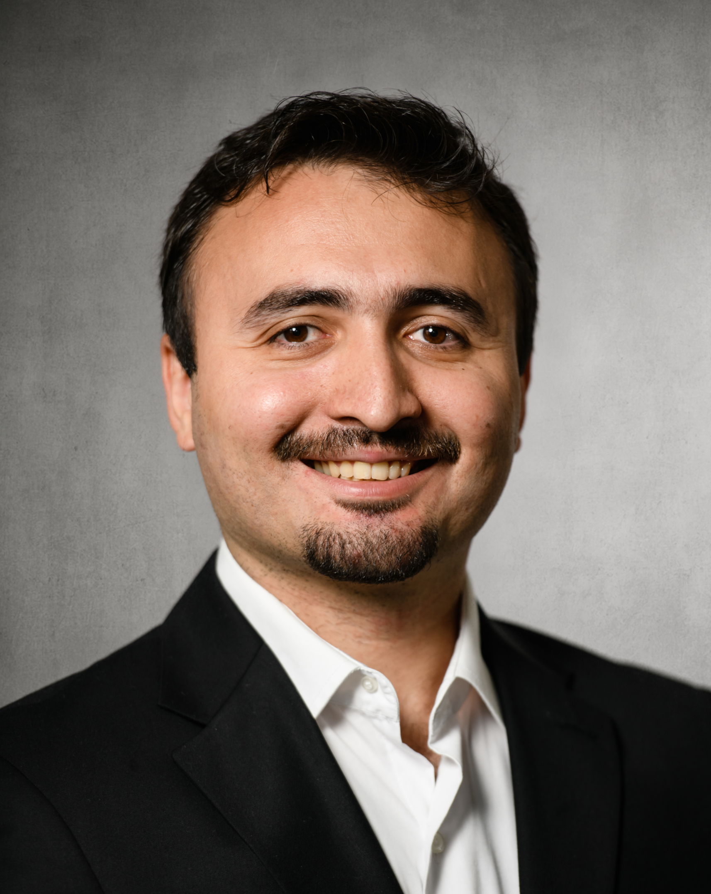
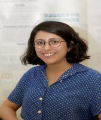
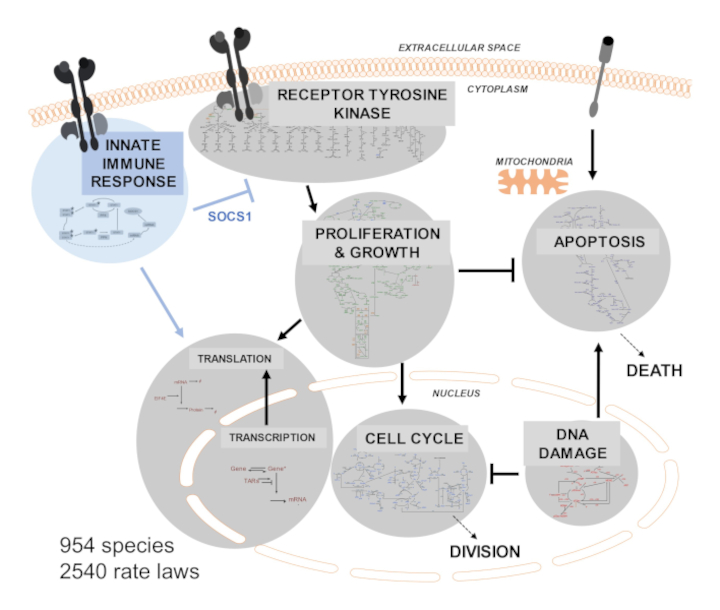
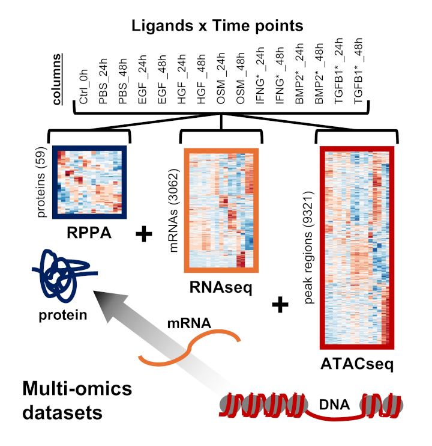
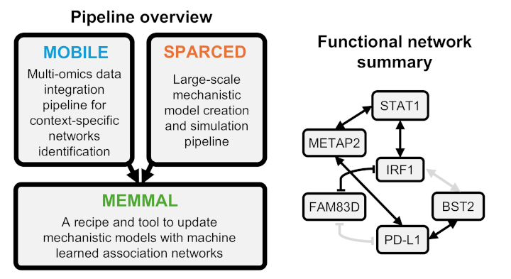

Our lab is located at the Department of Medical Biosciences, Umeå University and is affiliated with SciLifeLab.
We are part of the national program for data-driven life science (DDLS), funded generously by the Knut and Alice Wallenberg Foundation.
Our lab aims to merge machine learning and mechanistic computational models with patient data to create clinically predictive computational models for cancer.
We are a computational biology lab with a foot in the wet-lab.
Current Team

Cemal ErdemRole: PI
Education:
PhD, University of Pittsburgh & Carnegie Mellon University
MSc, Koc University
BSc, Middle East Technical University
Links: LinkedIn / Google Scholar / Lab GitHub
Neelam Sharma
Role: Postdoc
Education:
PhD, IIIT-Delhi
MSc, GLA University
Links: LinkedIn /
Google Scholar /
University webpage
Aurore K. Amrit
Role: PhD student
Education:
PharmD candidate, Faculty of Pharmacy of Paris
Master, Université Paris Cité x PSL x Arts et Métiers
Links:
LinkedIn /
University webpage

Rabia ŞenRole: PhD student
Education:
MSc in Neuroscience, Bilkent University
BSc in Molecular Biology and Genetics, Istanbul University
Links: LinkedIn / University webpage
This could be "You"
Role: Team member
Education:
Any university in the universe
Links:
Maybe should have google scholar at least!
Check University careers page for the appplication!
Cemal Erdem
Assistant Professor and DDLS Fellow
Department of Medical Biosciences, Umeå University
SciLifeLab and Wallenberg National Program for Data-Driven Life Science
Mailing address:
By 6M, Sjukhusområdet
Umeå Universitet, 901 85 Umeå
Email: cemal.erdem@umu.se
Publications
' denotes co-first and * denotes corresponding authorship
- (Preprint) Nissen I, Dakhel S, Chakraborty C, Holm Nygaard A, Kirkeby A, Hornblad A, Erdem C, Remeseiro S* (2025). Gene regulatory networks linked to GABA signalling emerge as relevant for glioblastoma pathogenesis. bioRxiv. doi.org/10.1101/2025.04.30.651564 [Link]
- (Preprint) Mallikarjuna P', Erdem C', Hedman H, Sitaram RT, Beorlegui RI, Aripaka K, Larsson A, Ljungberg B, Kamali-Moghaddam M, Landstrom M* (2025). Seven blood biomarkers are associated with TGF-β and VHL-HIF signaling in patients with clear cell renal cell carcinoma. bioRxiv. doi.org/10.1101/2025.02.07.636864 [Link]
- Mutsuddy A', Huggins JR', Amrit AK', Harley-Gasaway AM, Erdem C, Jones ET, Laurine OG, Calhoun JC, Birtwistle MR* (2025). Mechanistic modeling of cell viability assays with in silico lineage tracing. PLOS Computational Biology. 21 (8), e1013156. [Link]
- Erdem C, Gross SM, Heiser LM*, Birtwistle MR* (2023). MOBILE pipeline enables identification of context-specific networks and regulatory mechanisms. Nature Communications. 14, 3991. [Link]
- Erdem C*, Birtwistle MR* (2023). MEMMAL: A tool for expanding large-scale mechanistic models with machine learned associations and big datasets. Frontiers in Systems Biology. 3. Invited special issue paper. [Link]
- Mutsuddy A', Erdem C', Salim M, Cook D, Hobbs N, Birtwistle MR* (2023). Computational speed-up of large-scale, single-cell model simulations via a fully-integrated SBML-based format. Bioinformatics Advances. 3 (1). [Link]
- Erdem C*, Mutsuddy A, Bensman EM, Dodd W, Saint-Antoine MM, Bouhaddou M, Blake RC, Gross SM, Heiser LM, Feltus FA, Birtwistle MR* (2022). A scalable, open-source implementation of a large-scale mechanistic model for single cell proliferation and death signaling. Nature Communications. 13, 3555. [Link]
- Gross SM, Dane MA, Smith RL, Devlin K, McLean I, Derrick D, Mills C, Subramanian K, London AB, Torre D, Evangelista J, Clarke D, Xie Z, Erdem C, Lyons N, Natoli T, Pessa S, Lu X, Mullahoo J, Li J, Adam M, Wassie B, Liu M, Kilburn D, Liby TA, Bucher E, Sanchez-Aguila C, Daily K, Omberg L, Wang Y, Jacobson C, Yapp C, Chung M, Vidovic D, Lu Y, Schurer S, Lee A, Pillai A, Subramanian A, Papanastasiou M, Fraenkel E, Feiler HS, Mills GB, Jaffe J, Ma’ayan A, Birtwistle MR, Sorger PK, Korkola JE, Gray JW, Heiser LM* (2022). A multi-omic analysis of MCF10A cells provides a resource for integrative assessment of ligand-mediated molecular and phenotypic responses. Communications Biology (Nature). 5, 1066. [Link]
- Zadeh CO, Huggins JR, Sarmah D, Westbury BC, Interiano WR, Jordan MC, Phillips SA, Dodd WB, Meredith WO, Harold NJ, Erdem C, and Birtwistle MR* (2022). Mesowestern Blot: Simultaneous Quantitative Analysis for Hundreds of Sub-Microliter Lysates. ACS Omega. 7 (33), 28912-28923. [Link]
- Erdem C, Lee AV, Taylor DL, Lezon TR* (2021). Inhibition of RPS6K reveals context-dependent Akt activity in luminal breast cancer cells. PLOS Computational Biology. 17 (6), e1009125. [Link]
- Erdem C, Nagle AM, Casa AJ, Litzenburger B, Wang Y, Taylor DL, Lee AV, Lezon TR* (2016). Proteomic Screening and Lasso Regression Reveal Differential Signaling in Insulin and Insulin-like Growth Factor I (IGF1) Pathways. Molecular & Cellular Proteomics. 15 (9), 3045-3057. [Link]
- Erdem C, Bozkurt Y, Erman B, Gul A, Demir A* (2015). Mathematical Modeling of Behcet's Disease: A dynamical systems approach. Journal of Biological Systems. 23 (02), 231-57. [Link]
Projects
Large-scale mechanistic modeling (see SPARCED paper)

SPARCED (github.com/SPARCED) is an open-source pipeline to create and simulate largest-scale mechanistic models for human cells. The tool can convert structured lists of species, parameters, and reactions into an SBML model file. The default model is based on one of the largest pan-cancer signaling models in the literature, which already incorporated major pathways of receptor tyrosine kinase signalling (EGFR, HER2, ERBB3, ERBB4, FGFR, INSR, IGF1R, MET, PDGFR), proliferation (AKT, ERK2, MTOR), cell cycle, apoptosis, DNA damage, and transcription and translation events. The key aspects of SPARCED include (i) compatibility with high performance/cloud computing, (ii) ability to simulate thousands of single-cell trajectories in parallel, (iii) recording of cell division and death events, (iv) traceability of protein trajectories over generations of cells, (v) easy alteration to include new pathways, and (vi) easy change of context to other cell types.
Multi-omics data integration and integrative data analysis (see MOBILE paper)

MOBILE (github.com/MOBILE) pipeline integrates multi-omics datasets in a data-driven, biologically-structured manner and finds context-specific association networks. The gene-level association networks generated can be used to nominate differentially enriched pathways.
Machine learning + Mechanistic modeling --> Causal inference (see MEMMAL paper)

MEMMAL (github.com/MEMMAL) framework uses machine learnt interactions as a basis for new reactions in mechanistic models. As a proof-of-concept, we incorporated MOBILE inferred novel IFNγ/PD-L1 related associations into SPARCED and explored possibly causal interactions. This work is a template for combining big-data-inferred interactions with mechanistic models, which could be more broadly applicable for building multi-scale precision medicine and whole cell models.
Open positions
Current opennings: Interested UmU Masters students, please send an email!
Upcoming opennings: None currently.. Please check back later or email.
Past opennings:
Two postdoctoral positions! Application deadline: 2025-02-16
Two PhD positions! Application deadline: 2024-01-14